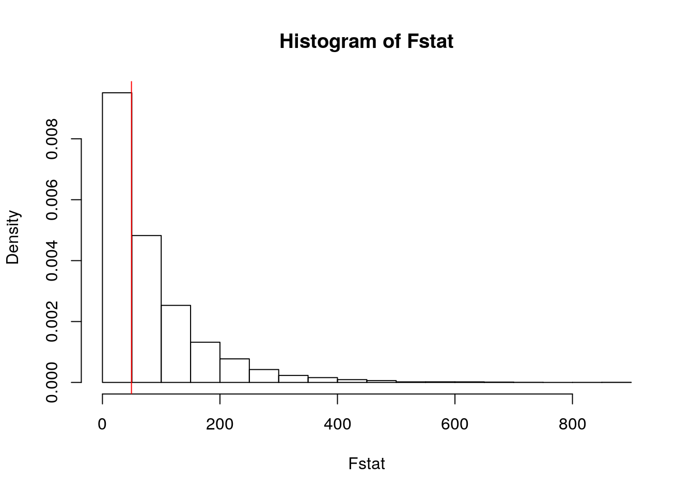

January 1, 0001
knitr::opts_chunk$set(echo = TRUE, eval = TRUE, fig.align = "center",
warning = F, message = F, tidy = TRUE, tidy.opts = list(width.cutoff = 60),
R.options = list(max.print = 100))Kristina Rodrigues; UT EID: kpr484
Introduction
Our earth is slowly changing due to our carbon footprint and global warming. This has resulted in more intense, harder-to-predict natural disasters that have been taking the world by storm. In my previous project, I looked at the at how different factors impacted the intensity of storms by looking at sealevel. In this project, I will be using the same dataset to observe just how each environmental factor impacts and strongly affects tropical storms. The dataset includes information on various tropical storms and their characteristics: storm name, year, date of report, coordinates, pressure (in millibars), status, category, and wind speed (in knots). This data was collected from the NOAA Atlantic Hurricane database and was measured frequently during each tropical storm. After wrangling the “storms” dataset and adding a binary variable, the dataset contains 40,040 observations, but I sliced it down to 1,000 observations so that it would be easier to work with. It also contains 13 variables. In a previous Marine Ecology course, I learned just how badly storms have been evolving due to climate change, so I hope to understand what factors are best for predicting the intensity of a storm so people can prepare accordingly.
Setting up the Dataset
library(tidyverse)
storms <- read_csv("storms.csv")
storms <- storms %>% pivot_longer(cols = c("ts_diameter", "hu_diameter"),
names_to = "storm_type", values_to = "diameter")
storms <- storms %>% separate(storm_type, into = c("type", NA),
sep = 2)
storms <- storms %>% pivot_longer(c("lat":"long"), names_to = "coordinates",
values_to = "coordinate_values")
storms %>% na.omit()## # A tibble: 6,252 x 14
## X1 name year month day hour status category wind pressure type
## <dbl> <chr> <dbl> <dbl> <dbl> <dbl> <chr> <dbl> <dbl> <dbl> <chr>
## 1 6472 Alex 2004 7 31 18 tropi… -1 25 1010 ts
## 2 6472 Alex 2004 7 31 18 tropi… -1 25 1010 ts
## 3 6472 Alex 2004 7 31 18 tropi… -1 25 1010 hu
## 4 6472 Alex 2004 7 31 18 tropi… -1 25 1010 hu
## 5 6473 Alex 2004 8 1 0 tropi… -1 25 1009 ts
## 6 6473 Alex 2004 8 1 0 tropi… -1 25 1009 ts
## 7 6473 Alex 2004 8 1 0 tropi… -1 25 1009 hu
## 8 6473 Alex 2004 8 1 0 tropi… -1 25 1009 hu
## 9 6474 Alex 2004 8 1 6 tropi… -1 25 1009 ts
## 10 6474 Alex 2004 8 1 6 tropi… -1 25 1009 ts
## # … with 6,242 more rows, and 3 more variables: diameter <lgl>,
## # coordinates <chr>, coordinate_values <dbl>storms <- select(storms, -diameter, -X1)
storms$storm_type <- ifelse(storms$category > 2, "Major", "Minor")
storms <- storms %>% slice(1:1000)
storms %>% head()## # A tibble: 6 x 13
## name year month day hour status category wind pressure type coordinates
## <chr> <dbl> <dbl> <dbl> <dbl> <chr> <dbl> <dbl> <dbl> <chr> <chr>
## 1 Amy 1975 6 27 0 tropi… -1 25 1013 ts lat
## 2 Amy 1975 6 27 0 tropi… -1 25 1013 ts long
## 3 Amy 1975 6 27 0 tropi… -1 25 1013 hu lat
## 4 Amy 1975 6 27 0 tropi… -1 25 1013 hu long
## 5 Amy 1975 6 27 6 tropi… -1 25 1013 ts lat
## 6 Amy 1975 6 27 6 tropi… -1 25 1013 ts long
## # … with 2 more variables: coordinate_values <dbl>, storm_type <chr>dim(storms)## [1] 1000 13I wrangled my data by pivoting longer to rid the dataset of excess and unwanted columns that were filled with NAs. I also added a binary variable (storm_type) that dictates if a storm is considered major or minor based on its category. A storm is considered major if it has a category that exceeds 2, so I used this criteria to create my binary variable column. Higher category storms are considered extreme and have wind speeds of high intensity, which I thought would be an interesting factor to look at.
MANOVA Testing
manova_1 <- manova(cbind(category, wind, pressure) ~ status,
data = storms)
summary(manova_1) #manova, everything is significant## Df Pillai approx F num Df den Df Pr(>F)
## status 2 0.87125 256.26 6 1992 < 2.2e-16 ***
## Residuals 997
## ---
## Signif. codes: 0 '***' 0.001 '**' 0.01 '*' 0.05 '.' 0.1 ' ' 1summary.aov(manova_1) #univariate ANOVA from MANOVA object; we performed 3## Response category :
## Df Sum Sq Mean Sq F value Pr(>F)
## status 2 1032.23 516.12 2195.8 < 2.2e-16 ***
## Residuals 997 234.34 0.24
## ---
## Signif. codes: 0 '***' 0.001 '**' 0.01 '*' 0.05 '.' 0.1 ' ' 1
##
## Response wind :
## Df Sum Sq Mean Sq F value Pr(>F)
## status 2 480692 240346 2133.8 < 2.2e-16 ***
## Residuals 997 112298 113
## ---
## Signif. codes: 0 '***' 0.001 '**' 0.01 '*' 0.05 '.' 0.1 ' ' 1
##
## Response pressure :
## Df Sum Sq Mean Sq F value Pr(>F)
## status 2 162559 81279 842.4 < 2.2e-16 ***
## Residuals 997 96195 96
## ---
## Signif. codes: 0 '***' 0.001 '**' 0.01 '*' 0.05 '.' 0.1 ' ' 1storms %>% group_by(status) %>% summarize(mean(category), mean(wind),
mean(pressure))## # A tibble: 3 x 4
## status `mean(category)` `mean(wind)` `mean(pressure)`
## <chr> <dbl> <dbl> <dbl>
## 1 hurricane 1.61 82.4 977.
## 2 tropical depression -1 25.9 1010.
## 3 tropical storm 0 48.2 999.pairwise.t.test(storms$category, storms$status, p.adj = "none")##
## Pairwise comparisons using t tests with pooled SD
##
## data: storms$category and storms$status
##
## hurricane tropical depression
## tropical depression <2e-16 -
## tropical storm <2e-16 <2e-16
##
## P value adjustment method: nonepairwise.t.test(storms$wind, storms$status, p.adj = "none")##
## Pairwise comparisons using t tests with pooled SD
##
## data: storms$wind and storms$status
##
## hurricane tropical depression
## tropical depression <2e-16 -
## tropical storm <2e-16 <2e-16
##
## P value adjustment method: nonepairwise.t.test(storms$pressure, storms$status, p.adj = "none") #performed 9 t-tests##
## Pairwise comparisons using t tests with pooled SD
##
## data: storms$pressure and storms$status
##
## hurricane tropical depression
## tropical depression <2e-16 -
## tropical storm <2e-16 <2e-16
##
## P value adjustment method: nonelibrary(mvtnorm)
library(ggExtra)
1 - (0.95)^13 # probability of Type I error## [1] 0.48665790.05/13 #Bonferroni correction## [1] 0.003846154ggplot(storms, aes(x = pressure, y = wind)) + geom_point(alpha = 0.5) +
geom_density_2d(h = 8) + coord_fixed() + facet_wrap(~status)library(rstatix)
group <- storms$status
DVs <- storms %>% select(category, wind, pressure)
lapply(split(DVs, group), cov)## $hurricane
## category wind pressure
## category 0.8399386 14.91859 -12.67896
## wind 14.9185868 291.57194 -248.39734
## pressure -12.6789555 -248.39734 247.97235
##
## $`tropical depression`
## category wind pressure
## category 0 0.00000 0.000000
## wind 0 10.09013 -3.436520
## pressure 0 -3.43652 9.065674
##
## $`tropical storm`
## category wind pressure
## category 0 0.00000 0.00000
## wind 0 69.50125 -45.03409
## pressure 0 -45.03409 60.44902A MANOVA was conducted to observe the effect of storm status (tropical depression, tropical storm, hurricane) on three dependent variables: category, wind, and pressure. Looking at a bivariate plots for each storm status revealed that there were major breaches from multivariate normality. After observing covariance matrices based on storm status, it was seen that that relative homogeneity was not met. There appear to be outliers in the dataset, so performing a MANOVA might not be the best method to study the effect of storm status on category, wind, and pressure.
Significant differences were observed among the three storm statuses (hurricane, tropical storm, and tropical depression) for at least one of the dependent variables, Pillai trace = 0.87125, pseudo F = 256.26, p < 0.0001.
To follow up and look more closely at each dependent variable, 3 univariate ANOVAs were conducted. The probability of a Type I error (1-(0.95)^13 = 0.4866579) and the Bonferroni correction (0.003846154) were taken into account while performing the univariate ANOVAs. The ANOVAs for category (F = 2195.8, p < 0.0001), wind (F = 2133.8, p < 0.0001), and pressure (F = 842.4, p < 0.0001) all showed significance.
To further examine which storm statuses differed in category, wind, and pressure, 9 post-hoc t-test analyses were performed. Hurricane, tropical storm, and tropical depression all differed significantly from each other when looking at category, wind, and pressure after performing a Bonferroni correction to adjust for multiple comparisons (bonferroni alpha = 0.05/13 = 0.003846154). In total, 13 tests were performed (1 MANOVA, 3 ANOVAs, 9 post-hoc t-tests).
Randomization Test
Fstat <- vector()
for (i in 1:10000) {
g1 <- rnorm(13)
g2 <- rnorm(13)
g3 <- rnorm(13)
SSW <- sum((g1 - mean(g1))^2 + (g2 - mean(g2))^2 + (g3 -
mean(g3))^2)
SSB <- 36 * sum((mean(c(g1, g2, g3)) - c(mean(g1), mean(g2),
mean(g3)))^2)
Fstat[i] <- (SSB/2)/(SSW/997)
}
(SSB/2)/(SSW/997)## [1] 231.167qf(0.95, df1 = 2, df2 = 997)## [1] 3.004752obs_F <- 49.38716
hist(Fstat, prob = T)
abline(v = obs_F, col = "red", add = T)
mean(Fstat > obs_F)## [1] 0.5288ggplot(storms, aes(wind, fill = status)) + geom_histogram(bins = 6.5) +
facet_wrap(~status, ncol = 2) + theme(legend.position = "none")The null hypothesis states that the true mean of storm status is the same for all groups. The alternative hypothesis states that at least one of the means will differ from the others. I chose to perform an F-statistic randomization test to see how large the variation between groups is. The F-statistic (49.38716), showing that the variation between groups is large relative to the variation within groups. After running a one-way ANOVA, the p-value was 0.5346, also depicted in the histogram above. This showed that out of the 10,000 F-statistics that we generated under the null hypothesis, a some of the F-statistics were greater than the actual F-stat of 49.38716. This allows us to fail to reject the null hypothesis that the true mean of storm status is the same for all groups, and we can conclude the groups do not differ. The second histogram shows the actual mean difference between storm status groups.
Linear Regression Model
library(tidyverse)
library(sandwich)
library(lmtest)
storms_1 <- storms %>% mutate(wind_centered = wind - (mean(wind,
na.rm = T)))
storms_1 %>% head()## # A tibble: 6 x 14
## name year month day hour status category wind pressure type coordinates
## <chr> <dbl> <dbl> <dbl> <dbl> <chr> <dbl> <dbl> <dbl> <chr> <chr>
## 1 Amy 1975 6 27 0 tropi… -1 25 1013 ts lat
## 2 Amy 1975 6 27 0 tropi… -1 25 1013 ts long
## 3 Amy 1975 6 27 0 tropi… -1 25 1013 hu lat
## 4 Amy 1975 6 27 0 tropi… -1 25 1013 hu long
## 5 Amy 1975 6 27 6 tropi… -1 25 1013 ts lat
## 6 Amy 1975 6 27 6 tropi… -1 25 1013 ts long
## # … with 3 more variables: coordinate_values <dbl>, storm_type <chr>,
## # wind_centered <dbl>mean(storms_1$wind)## [1] 50.64fit1 <- lm(category ~ storm_type * wind_centered, data = storms_1)
storms_1 %>% ggplot(aes(category, wind_centered)) + geom_point() +
geom_smooth(method = "lm", se = F)summary(fit1) #talk about R##
## Call:
## lm(formula = category ~ storm_type * wind_centered, data = storms_1)
##
## Residuals:
## Min 1Q Median 3Q Max
## -0.48949 -0.24956 -0.04291 0.16375 0.54378
##
## Coefficients:
## Estimate Std. Error t value Pr(>|t|)
## (Intercept) 0.614669 0.167771 3.664 0.000262 ***
## storm_typeMinor -0.512039 0.167994 -3.048 0.002365 **
## wind_centered 0.046092 0.002535 18.180 < 2e-16 ***
## storm_typeMinor:wind_centered -0.004761 0.002568 -1.854 0.063995 .
## ---
## Signif. codes: 0 '***' 0.001 '**' 0.01 '*' 0.05 '.' 0.1 ' ' 1
##
## Residual standard error: 0.267 on 996 degrees of freedom
## Multiple R-squared: 0.944, Adjusted R-squared: 0.9438
## F-statistic: 5591 on 3 and 996 DF, p-value: < 2.2e-16coeftest(fit1, vcov = vcovHC(fit1))##
## t test of coefficients:
##
## Estimate Std. Error t value Pr(>|t|)
## (Intercept) 0.6146693 0.1247451 4.9274 9.754e-07 ***
## storm_typeMinor -0.5120394 0.1250619 -4.0943 4.578e-05 ***
## wind_centered 0.0460922 0.0020984 21.9653 < 2.2e-16 ***
## storm_typeMinor:wind_centered -0.0047614 0.0021276 -2.2379 0.02545 *
## ---
## Signif. codes: 0 '***' 0.001 '**' 0.01 '*' 0.05 '.' 0.1 ' ' 1# checking assumptions
resids <- lm(category ~ storm_type * wind_centered, data = storms_1)$residuals
ggplot() + geom_histogram(aes(resids), bins = 20) #looks somewhat offfitted <- lm(category ~ storm_type * wind_centered, data = storms_1)$fitted.values
ggplot() + geom_point(aes(fitted, resids)) #appears slightly fanned outresids <- fit1$residuals
shapiro.test(resids)##
## Shapiro-Wilk normality test
##
## data: resids
## W = 0.96532, p-value = 1.085e-14fitvals <- fit1$fitted.values
ggplot() + geom_point(aes(fitvals, resids)) + geom_hline(yintercept = 0,
color = "red") #slight fanning; appears homoskedasticbptest(fit1)##
## studentized Breusch-Pagan test
##
## data: fit1
## BP = 31.792, df = 3, p-value = 5.789e-07coeftest(fit1, vcov = vcovHC(fit1))[, 1:2] #robust SEs## Estimate Std. Error
## (Intercept) 0.614669339 0.124745073
## storm_typeMinor -0.512039419 0.125061858
## wind_centered 0.046092184 0.002098407
## storm_typeMinor:wind_centered -0.004761363 0.002127624library(interactions)
interact_plot(fit1, category, wind_centered, plot.points = T)I performed a linear regression model predicting storm category from wind speeds and storm type After centering wind speed and storm pressure (numeric predicting variables), we can see the difference in category for storm type at the average wind speed (wind_centered = 0 -> wind = 50.64). The intercept (0.614669) is the predicted storm category for major storms with an average wind speed. For storms with an average wind speed, minor storms have an average category that is 0.512039 less than major storms. For every 1 unit increase in wind speed, predicted storm category increases by 0.046092 for storms classified as major. The slope of wind on storm category for minor storms is 0.004761 less than for major storms (not significant). The proportion of variation in storm category is 0.944, meaning that 94.4% of the variability in storm category is explained. However, after performing a Shapiro-Wilk test to assess normality, the data seems to violate the assumptions of normality. I also performed an interaction plot, which shows the data doesn’t appear to be normally distributed.
Next, I created a scatterplot to check whether homoskedasticity is met, which is typically when the points are equally distributed across the plot. The histogram shows a normal distribution, but the scatterplots of the fitted residuals show a pattern among the points, which violates homoskedasticity. The Breusch-Pagan (bp) test (bp = 31.792) looks directly at whether homoskedasticity has been met, which it has not been (p < 0.05). The p-value was significant, so we reject the null hypothesis of homoskedasticity. The robust standard errors look better after using heteroskedastic methods to observe the relationship between storm category and wind speeds, especially for the effect on storms classified as minor.
Bootstrapped Standard Errors
# bootstrap SE, note changes?
fit2 <- lm(category ~ storm_type * wind_centered, data = storms_1)
resids <- fit2$residuals
fitted <- fit2$fitted.values
resid_resamp <- replicate(5000, {
new_resids <- sample(resids, replace = TRUE)
storms_1$new_y <- fitted + new_resids
fit2 <- lm(new_y ~ storm_type + wind_centered, data = storms_1)
coef(fit2)
})
resid_resamp %>% t %>% as.data.frame %>% summarize_all(sd)## (Intercept) storm_typeMinor wind_centered
## 1 0.05122186 0.05223314 0.0003995152After bootstrapping the standard errors by residuals, I still noticed that wind_centered was significant; however, the boostrapped standard error for storm_typeMinor was less than the robust standard error. We barely fail to reject the null for storm_typeMinor and reject the null for wind_centered.This means that wind_centered was still significant after sampling from a dataset with replacement.
Logistic Regression Model Predicting a Binary Variable
library(tidyverse)
library(lmtest)
library(plotROC)
storms_data <- storms %>% mutate(y = ifelse(storm_type == "Major",
1, 0))
storms_data %>% head()## # A tibble: 6 x 14
## name year month day hour status category wind pressure type coordinates
## <chr> <dbl> <dbl> <dbl> <dbl> <chr> <dbl> <dbl> <dbl> <chr> <chr>
## 1 Amy 1975 6 27 0 tropi… -1 25 1013 ts lat
## 2 Amy 1975 6 27 0 tropi… -1 25 1013 ts long
## 3 Amy 1975 6 27 0 tropi… -1 25 1013 hu lat
## 4 Amy 1975 6 27 0 tropi… -1 25 1013 hu long
## 5 Amy 1975 6 27 6 tropi… -1 25 1013 ts lat
## 6 Amy 1975 6 27 6 tropi… -1 25 1013 ts long
## # … with 3 more variables: coordinate_values <dbl>, storm_type <chr>, y <dbl>fit3 <- glm(y ~ category + wind, data = storms_data)
summary(fit3)##
## Call:
## glm(formula = y ~ category + wind, data = storms_data)
##
## Deviance Residuals:
## Min 1Q Median 3Q Max
## -0.24868 -0.07876 -0.00903 0.06071 0.68158
##
## Coefficients:
## Estimate Std. Error t value Pr(>|t|)
## (Intercept) 0.3429805 0.0344273 9.962 <2e-16 ***
## category 0.2367104 0.0154166 15.354 <2e-16 ***
## wind -0.0066790 0.0007125 -9.374 <2e-16 ***
## ---
## Signif. codes: 0 '***' 0.001 '**' 0.01 '*' 0.05 '.' 0.1 ' ' 1
##
## (Dispersion parameter for gaussian family taken to be 0.02093419)
##
## Null deviance: 34.704 on 999 degrees of freedom
## Residual deviance: 20.871 on 997 degrees of freedom
## AIC: -1023.5
##
## Number of Fisher Scoring iterations: 2coeftest(fit3)##
## z test of coefficients:
##
## Estimate Std. Error z value Pr(>|z|)
## (Intercept) 0.34298050 0.03442731 9.9625 < 2.2e-16 ***
## category 0.23671042 0.01541662 15.3542 < 2.2e-16 ***
## wind -0.00667903 0.00071249 -9.3742 < 2.2e-16 ***
## ---
## Signif. codes: 0 '***' 0.001 '**' 0.01 '*' 0.05 '.' 0.1 ' ' 1exp(coef(fit3))## (Intercept) category wind
## 1.4091413 1.2670741 0.9933432probs <- predict(fit3, type = "response")
class_diag <- function(probs, truth) {
tab <- table(factor(probs > 0.5, levels = c("FALSE", "TRUE")),
truth)
acc = sum(diag(tab))/sum(tab)
sens = tab[2, 2]/colSums(tab)[2]
spec = tab[1, 1]/colSums(tab)[1]
ppv = tab[2, 2]/rowSums(tab)[2]
if (is.numeric(truth) == FALSE & is.logical(truth) == FALSE)
truth <- as.numeric(truth) - 1
# CALCULATE EXACT AUC
ord <- order(probs, decreasing = TRUE)
probs <- probs[ord]
truth <- truth[ord]
TPR = cumsum(truth)/max(1, sum(truth))
FPR = cumsum(!truth)/max(1, sum(!truth))
dup <- c(probs[-1] >= probs[-length(probs)], FALSE)
TPR <- c(0, TPR[!dup], 1)
FPR <- c(0, FPR[!dup], 1)
n <- length(TPR)
auc <- sum(((TPR[-1] + TPR[-n])/2) * (FPR[-1] - FPR[-n]))
data.frame(acc, sens, spec, ppv, auc)
}
class_diag(probs, storms_data$y)## acc sens spec ppv auc
## 1 0.972 0.2222222 1 1 1table(predict = as.numeric(probs > 0.5), truth = storms_data$y) %>%
addmargins## truth
## predict 0 1 Sum
## 0 964 28 992
## 1 0 8 8
## Sum 964 36 1000(964 + 8)/1000 #Accuracy## [1] 0.972964/992 #Sensitivity (TPR)## [1] 0.97177428/8 #Specificity (TNR)## [1] 1964/964 #Precision (PPV)## [1] 1ROC_plot <- ggplot(storms_data) + geom_roc(aes(d = y, m = probs),
n.cuts = 0)
ROC_plotcalc_auc(ROC_plot)## PANEL group AUC
## 1 1 -1 1storms_data$logit <- predict(fit3, type = "response")
storms_data %>% ggplot() + geom_density(aes(logit, color = storm_type,
fill = storm_type), alpha = 0.4) + theme(legend.position = c(0.85,
0.85)) + geom_vline(xintercept = 0) + xlab("predictor (logit)")No interaction was observed in this logistic regression. The odds of a tropical storm being classified as a major storm is 1.409. The odds of a storm classified as major having a category above 2 is 1.267 times the odds for minor storms. The odds of a major storm having a high wind speed is 0.993 times the odds the odds of a minor storm having a high wind speed. This shows that storms that are of higher category and higher wind speed effect whether a storm is classified as major or minor. A confusion matrix was performed above (accuracy = 0.972, TPR = 0.971, TNR = 1, PPV =1, AUC =1). With an AUC score of 1, the model is considered great at being able to predict the classification of storm type. The ROC plot shows a sharp 90-degree angle, which helps us visualize the interaction between specifity and sensitivity. The density plot shows the distrubution of log odds for each group (storm type by classification as either major or minor.)
Logistic Regression Model From ALL Remaining Variables
library(glmnet)
fit4 <- glm(y ~ wind + category + pressure, data = storms_data)
summary(fit4)##
## Call:
## glm(formula = y ~ wind + category + pressure, data = storms_data)
##
## Deviance Residuals:
## Min 1Q Median 3Q Max
## -0.28244 -0.07302 0.00159 0.05263 0.66990
##
## Coefficients:
## Estimate Std. Error t value Pr(>|t|)
## (Intercept) 7.3804753 0.8146947 9.059 <2e-16 ***
## wind -0.0105930 0.0008232 -12.868 <2e-16 ***
## category 0.2290976 0.0149023 15.373 <2e-16 ***
## pressure -0.0068637 0.0007939 -8.645 <2e-16 ***
## ---
## Signif. codes: 0 '***' 0.001 '**' 0.01 '*' 0.05 '.' 0.1 ' ' 1
##
## (Dispersion parameter for gaussian family taken to be 0.01949244)
##
## Null deviance: 34.704 on 999 degrees of freedom
## Residual deviance: 19.414 on 996 degrees of freedom
## AIC: -1093.9
##
## Number of Fisher Scoring iterations: 2coeftest(fit4)##
## z test of coefficients:
##
## Estimate Std. Error z value Pr(>|z|)
## (Intercept) 7.38047534 0.81469466 9.0592 < 2.2e-16 ***
## wind -0.01059303 0.00082319 -12.8682 < 2.2e-16 ***
## category 0.22909763 0.01490231 15.3733 < 2.2e-16 ***
## pressure -0.00686368 0.00079391 -8.6454 < 2.2e-16 ***
## ---
## Signif. codes: 0 '***' 0.001 '**' 0.01 '*' 0.05 '.' 0.1 ' ' 1exp(coef(fit4))## (Intercept) wind category pressure
## 1604.3521959 0.9894629 1.2574648 0.9931598probs_1 <- predict(fit4, type = "response")
class_diag <- function(probs_1, truth) {
tab <- table(factor(probs_1 > 0.5, levels = c("FALSE", "TRUE")),
truth)
acc = sum(diag(tab))/sum(tab)
sens = tab[2, 2]/colSums(tab)[2]
spec = tab[1, 1]/colSums(tab)[1]
ppv = tab[2, 2]/rowSums(tab)[2]
if (is.numeric(truth) == FALSE & is.logical(truth) == FALSE)
truth <- as.numeric(truth) - 1
# CALCULATE EXACT AUC
ord <- order(probs_1, decreasing = TRUE)
probs_1 <- probs_1[ord]
truth <- truth[ord]
TPR = cumsum(truth)/max(1, sum(truth))
FPR = cumsum(!truth)/max(1, sum(!truth))
dup <- c(probs_1[-1] >= probs[-length(probs_1)], FALSE)
TPR <- c(0, TPR[!dup], 1)
FPR <- c(0, FPR[!dup], 1)
n <- length(TPR)
auc <- sum(((TPR[-1] + TPR[-n])/2) * (FPR[-1] - FPR[-n]))
data.frame(acc, sens, spec, ppv, auc)
}
class_diag(probs_1, storms_data$y)## acc sens spec ppv auc
## 1 0.976 0.3333333 1 1 0.9164938table(predict = as.numeric(probs_1 > 0.5), truth = storms_data$y) %>%
addmargins## truth
## predict 0 1 Sum
## 0 964 24 988
## 1 0 12 12
## Sum 964 36 1000(964 + 12)/1000 #Accuracy## [1] 0.97612/36 #Sensitivity (TPR)## [1] 0.333333312/12 #Specificity (TNR)## [1] 1964/964 #Precision (PPV)## [1] 1ROC_plot_1 <- ggplot(storms_data) + geom_roc(aes(d = y, m = probs_1),
n.cuts = 0)
ROC_plot_1
calc_auc(ROC_plot_1)## PANEL group AUC
## 1 1 -1 1# LASSO
y <- storms_data$y %>% as.matrix
x <- model.matrix(y ~ -1 + ., data = storms_data)
CV <- cv.glmnet(x, y, family = "binomial")
cv <- cv.glmnet(x, y)
{
plot(cv$glmnet.fit, "lambda", label = TRUE)
abline(v = log(cv$lambda.1se))
abline(v = log(cv$lambda.min), lty = 2)
}lasso <- glmnet(x, y, family = "binomial", lambda = CV$lambda.2se)
coef(lasso)## 28 x 67 sparse Matrix of class "dgCMatrix"
##
## (Intercept) -3.287572 -1.977006 -1.388357 -0.9907437 -0.6831916 -0.4281156 -0.2073025
## nameAmelia . . . . . . .
##
## (Intercept) -0.01054467 0.1684573 0.3338654 0.4885715 0.6346673 0.7737132 0.9069039
## nameAmelia . . . . . . .
##
## (Intercept) 1.035174 1.159266 1.279783 1.397218 1.511977 1.624404 1.734786 1.843369
## nameAmelia . . . . . . . .
##
## (Intercept) 1.950363 2.055949 2.160284 2.263404 2.36563 2.466966 2.567505 2.667328
## nameAmelia . . . . . . . .
##
## (Intercept) 2.766508 2.86511 2.96319 ......
## nameAmelia . . . ......
##
## ..............................
## ........suppressing 34 columns and 25 rows in show(); maybe adjust 'options(max.print= *, width = *)'
## ..............................
##
## logit . . . . . . . . . . . . . . . . . . . . . . . . . . . . . . . . . ......storms_data %>% head()## # A tibble: 6 x 15
## name year month day hour status category wind pressure type coordinates
## <chr> <dbl> <dbl> <dbl> <dbl> <chr> <dbl> <dbl> <dbl> <chr> <chr>
## 1 Amy 1975 6 27 0 tropi… -1 25 1013 ts lat
## 2 Amy 1975 6 27 0 tropi… -1 25 1013 ts long
## 3 Amy 1975 6 27 0 tropi… -1 25 1013 hu lat
## 4 Amy 1975 6 27 0 tropi… -1 25 1013 hu long
## 5 Amy 1975 6 27 6 tropi… -1 25 1013 ts lat
## 6 Amy 1975 6 27 6 tropi… -1 25 1013 ts long
## # … with 4 more variables: coordinate_values <dbl>, storm_type <chr>, y <dbl>,
## # logit <dbl>lasso_data <- storms_data %>% mutate(minor_storm = ifelse(storm_type ==
"Major", 1, 0))
head(lasso_data)## # A tibble: 6 x 16
## name year month day hour status category wind pressure type coordinates
## <chr> <dbl> <dbl> <dbl> <dbl> <chr> <dbl> <dbl> <dbl> <chr> <chr>
## 1 Amy 1975 6 27 0 tropi… -1 25 1013 ts lat
## 2 Amy 1975 6 27 0 tropi… -1 25 1013 ts long
## 3 Amy 1975 6 27 0 tropi… -1 25 1013 hu lat
## 4 Amy 1975 6 27 0 tropi… -1 25 1013 hu long
## 5 Amy 1975 6 27 6 tropi… -1 25 1013 ts lat
## 6 Amy 1975 6 27 6 tropi… -1 25 1013 ts long
## # … with 5 more variables: coordinate_values <dbl>, storm_type <chr>, y <dbl>,
## # logit <dbl>, minor_storm <dbl>lasso_data <- lasso_data %>% select(13:15)
lasso_fit <- glm(y ~ ., data = lasso_data, family = "binomial")
lasso_probs <- predict(lasso_fit, type = "response")
class_diag <- function(lasso_probs, truth) {
tab <- table(factor(lasso_probs > 0.5, levels = c("FALSE",
"TRUE")), truth)
acc = sum(diag(tab))/sum(tab)
sens = tab[2, 2]/colSums(tab)[2]
spec = tab[1, 1]/colSums(tab)[1]
ppv = tab[2, 2]/rowSums(tab)[2]
if (is.numeric(truth) == FALSE & is.logical(truth) == FALSE)
truth <- as.numeric(truth) - 1
# CALCULATE EXACT AUC
ord <- order(lasso_probs, decreasing = TRUE)
lasso_probs <- lasso_probs[ord]
truth <- truth[ord]
TPR = cumsum(truth)/max(1, sum(truth))
FPR = cumsum(!truth)/max(1, sum(!truth))
dup <- c(lasso_probs[-1] >= probs[-length(lasso_probs)],
FALSE)
TPR <- c(0, TPR[!dup], 1)
FPR <- c(0, FPR[!dup], 1)
n <- length(TPR)
auc <- sum(((TPR[-1] + TPR[-n])/2) * (FPR[-1] - FPR[-n]))
data.frame(acc, sens, spec, ppv, auc)
}
class_diag(lasso_probs, lasso_data$y)## acc sens spec ppv auc
## 1 1 1 1 1 1table(lasso_data$y, lasso_probs > 0.5)##
## FALSE TRUE
## 0 964 0
## 1 0 36# 10-fold CV on LASSO
k = 10
data5 <- lasso_data[sample(nrow(lasso_data)), ]
folds <- cut(seq(1:nrow(lasso_data)), breaks = k, labels = F)
diags5 <- NULLA logistic regression was run predicting the binary response variable of storm type (major or minor) from the rest of the variables (accuracy = 0.976, TPR = 0.33, TNR = 1, PPV = 1, auc = 0.916). The AUC for predicting from all variables (auc = 0.9164938) was lower than the AUC for predicting a binary variable (auc = 1). The 10-fold cross validation showed signs of overfitting for the sensitivity because the AUC was 0.848, which was lower when just looking at the logistic regression of the binary variable. LASSO was performed on the same model, and the classification of storm type was retained. The lambda was calculated above and thought best to maximize the CV classification (2). Finally, a 10-fold CV was performed on the variables LASSO selected, bringing the AUC up to 0.8902, which is considered great and an improvement after performing LASSO.